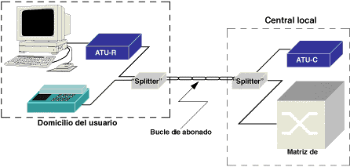
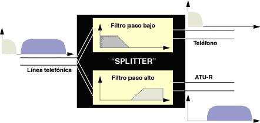
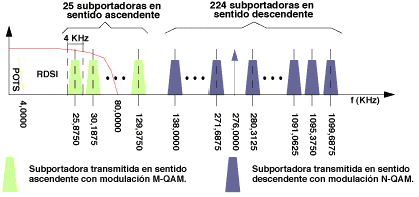
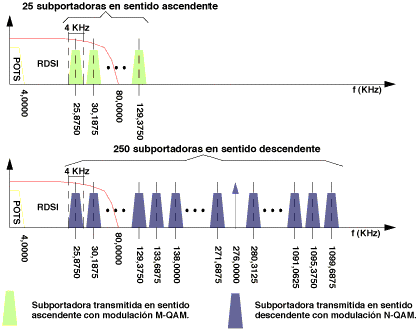
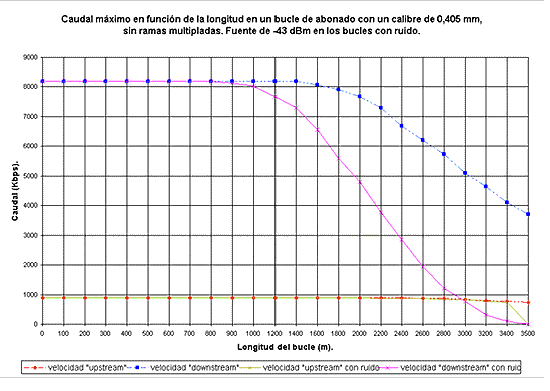

Es una técnica de modulación para la transmisión de datos a gran velocidad sobre el par de cobre. La primera diferencia entre esta técnica de modulación y las usadas por los módems en banda vocal (V.32 a V.90) es que éstos últimos sólo transmiten en la banda de frecuencias usada en telefonía (300 Hz a 3.400 Hz), mientras que los módems ADSL operan en un margen de frecuencias mucho más amplio que va desde los 24 KHz hasta los 1.104 KHz, aproximadamente.
Otra diferencia entre el ADSL y otros módems es que el ADSL puede coexistir en un mismo bucle de abonado con el servicio telefónico, cosa que no es posible con un módem convencional pues opera en banda vocal, la misma que la telefonía.
Al tratarse de una modulación en la que se transmiten diferentes caudales en los sentidos Usuario -> Red y Red -> Usuario, el módem ADSL situado en el extremo del usuario es distinto del ubicado al otro lado del bucle, en la central local. En la Figura 7: Enlace ADSL se muestra un enlace ADSL entre un usuario y la central local de la que depende. En dicha figura se observa que además de los módemes situados en casa del usuario (ATU-R) y en la central (ATU-C) delante de cada uno de ellos se ha de colocar un dispositivo denominado "splitter". Este dispositivo no es más que un conjunto de dos filtros: uno paso alto y otro paso bajo. La finalidad de estos filtros es la de separar las señales transmitidas por el bucle de modo que las señales de baja frecuencia (telefonía) de las de alta frecuencia (ADSL).


En una primera etapa coexistieron dos técnicas de modulación para el ADSL: CAP y DT. Finalmente los organismos de estandarización (ANSI, ETSI e ITU) se han decantado por la solución DT. Básicamente consiste en el empleo de múltiples portadoras y no sólo una, que es lo que se hace en los módems de banda vocal. Cada una de estas portadoras (denominadas subportadoras) es modulada en cuadratura (modulación QA) por una parte del flujo total de datos que se van a transmitir. Estas subportadoras están separadas entre sí 4,3125 KHz, y el ancho de banda que ocupa cada subportadora modulada es de 4 KHz. El reparto del flujo de datos entre subportadoras se hace en función de la estimación de la relación Señal/Ruido en la banda asignada a cada una de ellas. Cuanto mayor es esta relación, tanto mayor es el caudal que puede transmitir por una subportadora. Esta estimación de la relación Señal/Ruido se hace al comienzo, cuando se establece el enlace entre el ATU-R y el ATU-C, por medio de una secuencia de entrenamiento predefinida. La técnica de modulación usada es la misma tanto en el ATU-R como en el ATU-C. La única diferencia estriba en que el ATU-C dispone de hasta 256 subportadoras, mientras que el ATU-R sólo puede disponer como máximo de 32. La modulación parece y realmente es bastante complicada, pero el algoritmo de modulación se traduce en una IFFT en el modulador, y en una FFT en el demodulador situado al otro lado del bucle. Estas operaciones se pueden efectuar fácilmente si el núcleo del módem se desarrolla sobre un DSP.


Como se puede comprobar, la modulación DT empleada parece y realmente es bastante complicada, pero el algoritmo de modulación se traduce en una IFFT en el modulador, y en una FFT en el demodulador situado al otro lado del bucle. Estas operaciones se pueden efectuar fácilmente si el núcleo del módem se desarrolla sobre un DSP.
En las dos figuras anteriores se han presentado las dos modalidades dentro del ADSL con modulación DT: FD y cancelación de ecos. En la primera, los espectros de las señales ascendente y descendente no se solapan, lo que simplifica el diseño de los módems, aunque reduce la capacidad de transmisión en sentido descendente, no tanto por el menor número de subportadoras disponibles como por el hecho de que las de menor frecuencia, aquéllas para las que la atenuación del par de cobre es menor, no están disponibles. La segunda modalidad, basada en un cancelador de ecos para la separación de las señales correspondientes a los dos sentidos de transmisión, permite mayores caudales a costa de una mayor complejidad en el diseño.
En la Figura 9: odulación ADSL DT con FD y en la Figura 10: odulación ADSL DT con cancelación de ecos se muestran los espectros de las señales transmitidas por los módems ADSL tanto en sentido ascendente como descendente. Como se puede ver, los espectros nunca se solapan con la banda reservada para el servicio telefónico básico (POTS) y en cambio sí que se solapan con los correspondientes al acceso básico RDSI. Por ello el ADSL y el acceso básico RDSI son incompatibles.
En un par de cobre la atenuación por unidad de longitud aumenta a medida que se incrementa la frecuencia de las señales transmitidas. Y cuanto mayor es la longitud del bucle, tanto mayor es la atenuación total que sufren las señales transmitidas. Ambas cosas explican que el caudal máximo que se puede conseguir mediante los módems ADSL varíe en función de la longitud del bucle de abonado. En la Figura 11:
Caudal máximo (Kbps) de los módems ADSL en función de la longitud del bucle de abonado, se representa la curva del caudal máximo en Kbps, tanto en sentido ascendente como descendente, que se puede conseguir sobre un bucle de abonado con un calibre de 0,405 mm., sin ramas multipladas. En la figura se representan las curvas con y sin ruido. La presencia de ruido externo provoca la reducción de la relación Señal/Ruido con la que trabaja cada una de las subportadoras, y esa disminución se traduce en una reducción del caudal de datos que modula a cada subportadora, lo que a su vez implica una reducción del caudal total que se puede transmitir a través del enlace entre el ATU-R y el ATU-C.
Hasta una distancia de 2,6 Km de la central, en presencia de ruido (caso peor), se obtiene un caudal de 2 bps en sentido descendente y 0,9 bps en sentido ascendente. Esto supone que en la práctica, teniendo en cuenta la longitud media del bucle de abonado en las zonas urbanas, la mayor parte de los usuarios están en condiciones de recibir por medio del ADSL un caudal superior a los 2 bps. Este caudal es suficiente para muchos servicios de banda ancha, y desde luego puede satisfacer las necesidades de cualquier internauta, teletrabajador así como de muchas empresas pequeñas y medianas.

|
|
|
|